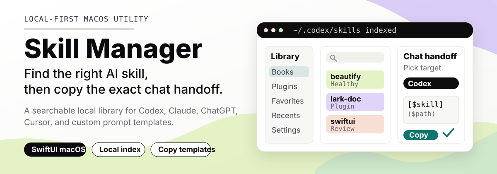

Local README preview at GitHub-like content width. Source: ../../README.md
Skill Manager

Skill Manager is a local-first macOS utility for people who work with reusable AI skills across Codex, Claude, ChatGPT, Cursor, and plugin-backed toolchains. Its signature surface is a notch-style workspace that keeps skill lookup, quick notes, and a temporary file shelf close to the current chat without forcing you back into Finder.
What it does
- Opens a notch-style workspace for skill management, quick notes, and a drag-friendly file staging shelf.
- Indexes local Codex skill roots, system skills, project skills, and plugin-provided skills.
- Shows a focused library with search, source badges, categories, health states, favorites, and recents.
- Opens a detail view with the skill description, provenance, tags, source path, duplicate information, and a useful excerpt.
- Copies platform-aware references such as Codex Markdown mentions, instruction blocks, Claude prompts, ChatGPT prompts, Cursor prompts, plain text, and custom templates.
Why it exists
AI skill collections grow faster than memory, and real AI-assisted work usually also creates scratch notes and short-lived files. A useful skill may live under ~/.codex/skills, inside .system, or in a plugin cache, and each chat surface wants a different reference format.
Open notch workspace -> find a skill -> capture context -> stage files -> copy the handoffHighlight features
- Notch-style skill manager: keep the skill library one gesture away from the current task, with search, health states, categories, favorites, recents, plugin views, and platform-aware copy actions.
- Quick note capture: write temporary Markdown notes near the top edge of the screen while reading, coding, or chatting with an AI assistant.
- File staging shelf: drop files into a short-lived shelf, keep them visible while you work, then drag or copy them back into the next app or chat flow.
Core workflow
- Open the notch workspace or Skill Manager window from the menu bar.
- Search by name, description, tag, platform, or source path.
- Capture a quick note or stage related files when the task needs local context.
- Check the skill detail view for use case, provenance, health, and source excerpt.
- Choose a target platform template, copy the generated mention or prompt, and paste it into the active AI chat.
Product surface
| Area | Purpose |
|---|---|
| Library | Search and filter all indexed skills, including local, system, project, and plugin entries. |
| Recommendations | Surface likely useful skills from the current Codex session context. |
| Plugins | Inspect plugin packages and their contributed skills. |
| Favorites and Recents | Keep repeat workflows close by after copy actions. |
| Settings | Manage roots, re-indexing, language, launch at login, and copy templates. |
| Notch workspace | Keep skill search, quick notes, and file shelf items near the top edge of the screen. |
| Quick notes | Capture Markdown scratch notes without opening a full notes app. |
| File shelf | Temporarily hold files while moving between Finder, code, and chat. |
Copy templates
The app ships with built-in templates for common chat surfaces:
[$skill_name]($skill_path)Use the "$skill_name" skill for this task.
Skill path: $skill_path
When to use it: $descriptionTemplates are stored locally, can be edited, and can be duplicated for new platforms. Unsupported source types fall back to a generic Markdown or plain text instruction.
Health and provenance
Skill Manager keeps routine maintenance visible without turning the app into a full editor. Indexed entries can show health states for healthy skills, missing metadata, missing files, duplicate names, and unreadable sources. Provenance records such as SOURCE.md are displayed when available so third-party, system, and self-created skills are easier to distinguish.
Companion skill
Skill Manager is designed to work especially well with $ming-skill-source-manager. Use that skill to create and audit SOURCE.md provenance records for installed skills, then use Skill Manager to browse the results, spot third-party or unknown origins, and copy the right skill reference into chat.
$ming-skill-source-manager writes SOURCE.md -> Skill Manager indexes provenance -> chat handoff includes the right skill referenceBuild locally
Requirements:
- macOS with Xcode that supports the project settings.
- SwiftUI and AppKit runtime support.
- Local package dependency at
Vendor/swift-markdown-engine.
Run the app from Xcode with the skillManger scheme, or build from the terminal:
xcodebuild \
-project skillManger.xcodeproj \
-scheme skillManger \
-destination 'platform=macOS' \
buildRun tests:
xcodebuild test \
-project skillManger.xcodeproj \
-scheme skillManger \
-destination 'platform=macOS'Create a local DMG:
./script/package_dmg.shProject notes
- The bundle identifier is
liminghua.skillManger. - The product name in the Xcode project is currently
skillManger. - MVP scope is intentionally focused on local library management and chat handoff, not marketplace publishing or full
SKILL.mdediting. - The repository currently does not publish a license file.